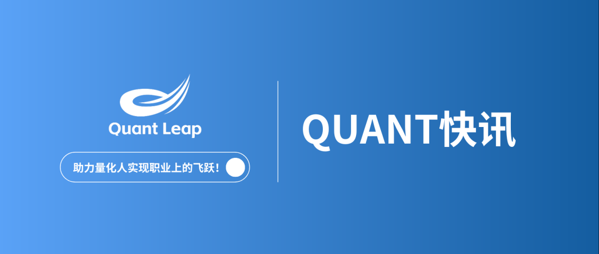
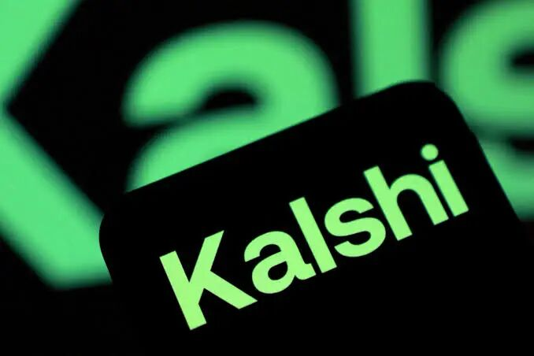
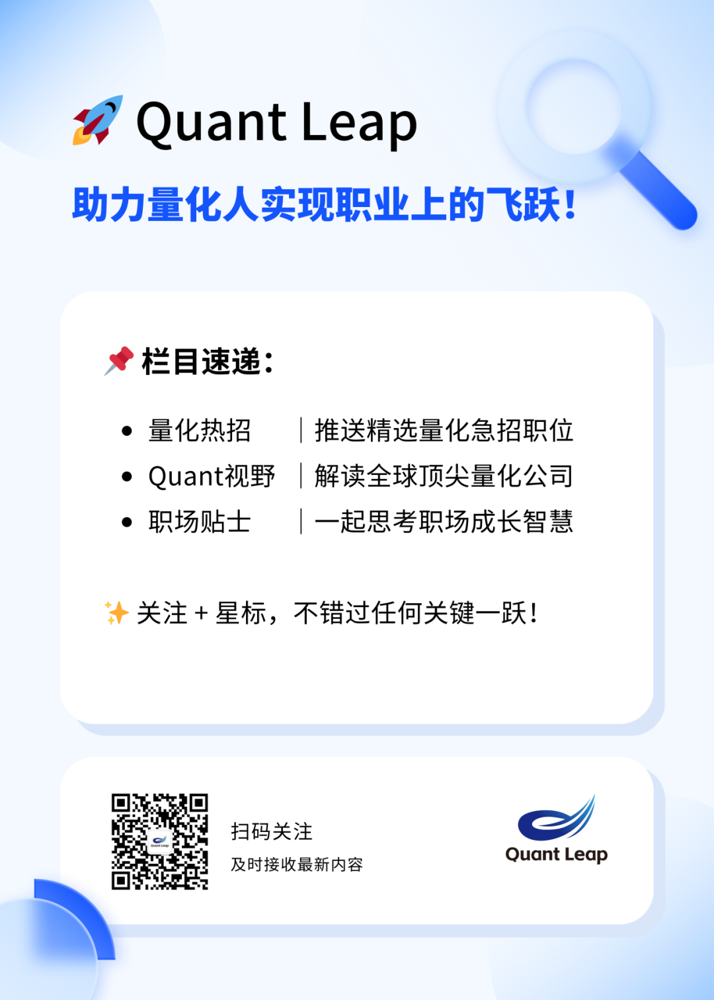

在预测市场兴起之后，一批顶级量化交易员正在获得远超传统金融市场的收入。
据业内人士透露，一些在 Kalshi 等预测市场平台交易的量化交易员年收入已达到 100 万美元以上，而传统交易公司想要挖走这些人才，往往需要开出翻倍甚至更高的薪酬。
一些交易员是在任职传统交易公司的同时，逐渐建立起预测市场交易策略。有些人会在合同中提前协商相关安排，也有人选择忽略合同限制，继续参与预测市场交易。
一位招聘顾问表示，进入预测市场领域的交易员中，有相当一部分此前主要交易传统金融市场中的期权和期货。
预测市场为他们提供了将原有交易能力应用到新市场的机会，例如体育赛事、政治事件等他们更感兴趣的领域。
不过，一位化名为 Lad 的预测市场交易员表示，他几乎不会观看自己交易的比赛，即使观看，也需要提前研究比赛规则。
有招聘顾问透露，部分顶级量化交易员在预测市场中的收入已经达到“可以退休”的水平，通常年收入在 50 万至 100 万美元之间。
而 Lad 本人的累计交易利润已经超过 700 万美元。
对冲基金、家族办公室
纷纷布局预测市场交易团队
随着预测市场交易机会扩大，越来越多传统金融机构开始布局这一领域。
除了个人交易员外，对冲基金、家族办公室以及其他投资机构也正在组建预测市场交易团队。
一位招聘顾问表示，目前其新增客户中约 60% 都与预测市场领域存在一定关联；另一位猎头也表示，来自机构和候选人的兴趣“非常强烈”。
与此同时，一些传统博彩公司也正在向量化交易机构转型。
例如，FanDuel 正在招聘高级算法交易经理，薪资最高可达 20 万美元。
此外，一些新成立的小型交易公司也开始进入预测市场，希望通过该领域验证自身交易能力，并建立长期业务模式。
世界杯推动预测市场交易人才需求爆发
2026 年世界杯期间，预测市场交易需求明显增长，尤其是非做市机构对相关人才的需求大幅提升。
Lad 表示：“所有体育交易员都赚了很多钱。”
虽然世界杯结束后市场交易量有所下降，但机构投资者对预测市场人才的兴趣依然存在。
不过，仅凭世界杯期间取得优异表现，并不足以获得机构青睐。
目前，多数机构要求候选人至少拥有 3 个月以上稳定盈利记录，才会考虑招聘。
顶级交易员难挖：
机构需要开出百万美元级薪酬
问题在于，真正具备长期盈利能力的顶级交易员，往往并不急于加入机构。
原因很简单：他们已经可以通过独立交易获得丰厚收入。
因此，机构若想吸引这些人才，必须提供足够有吸引力的报价。
猎头透露，目前市场上针对顶级预测市场交易员的报价已经达到 100 万至 200 万美元，如果低于这一水平，很多招聘往往无法达成。
此外，当机构招聘交易员负责从零搭建预测市场交易团队时，候选人也更倾向于要求更高比例的保证奖金，而不是完全按照交易利润（PnL）挂钩。
原因在于，搭建新团队本身存在较高不确定性，交易员需要承担业务从无到有发展的风险。
真正赚钱的预测市场交易员只是极少数
虽然预测市场吸引了大量关注，但能够持续盈利的交易员实际上非常稀缺。
根据 Andrey Sergeenkov 对 250 万名预测市场交易者的分析：
84% 的交易者长期亏损或仅实现盈亏平衡；
只有 0.033% 的交易者累计盈利超过 10 万美元。
猎头表示：“绝大多数人距离机构要求的标准还非常远。”
机构寻找的不只是能够短期赚钱的人，而是能够持续交易、稳定创造收益，并且不会让投资者承担额外风险的人。
预测市场仍面临监管和 Alpha 衰减挑战
目前，部分顶级预测市场交易员仍然保持独立身份。
Lad 目前也收到了一家 Hudson River Trading 最大竞争对手之一的工作邀请，不过他并不排斥未来重新回到传统交易机构。
他说：
“Alpha 衰减非常快，而 Kalshi 的监管状态也一直处于变化之中。”
他预计，等自己的竞业限制结束后，自己最终仍会回归传统金融行业。

来源参考：
eFinancialCareers：Quants are earning $1m+ on Kalshi. Trading firms have to pay double or nothing to hire them.
免责声明：
本篇内容基于公开渠道整理，包括公司官网、媒体报道、招聘信息及实习体验文章，内容仅用于非商业目的的信息传播与行业学习交流。如有不当引用或侵权，请联系我方删除，感谢理解与支持。
Disclaimer:
This content is compiled from publicly available sources, including company websites, media reports, recruitment information, and internship experience articles. It is intended solely for non-commercial information sharing and industry learning purposes. If there are any inappropriate citations or copyright infringements, please contact us for removal. Thank you for your understanding and support.
📚QUANT快讯：
本资讯栏目聚焦国内外量化行业动态，涵盖公司事件、产品策略、人事变动、监管政策等，帮助你及时了解行业信息。
🚀 关注 @Quant Leap，获取量化行业动态与最新职位更新。
近期岗位
RECRUIT
香港机会：
更多机会：
QR-高频 | 头部私募 | 上海/香港/纽约
QR-因子/模型/算法交易 | 头部私募 | 上海
合规风控负责人 | 百亿私募 | 北京
PM-中高频方向 | 头部私募 | 北上深港新
量化开发工程师 | 百亿私募 | 北上
资深市场 | 头部私募 | 北上深
欢迎联系我们
了解更多量化机会
career@quantleap.cn
